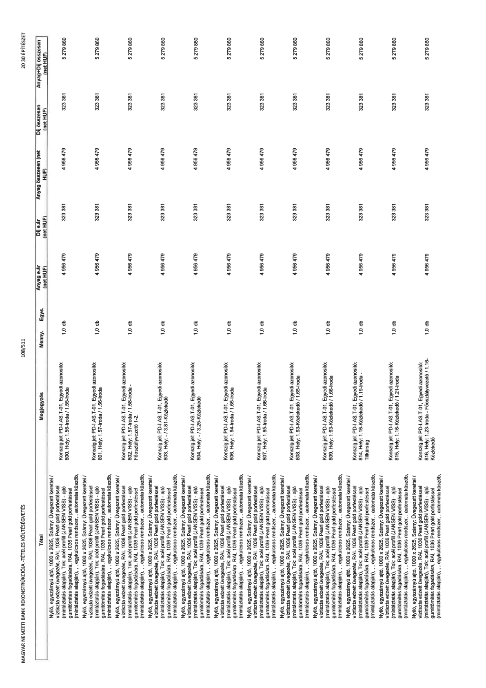

| Tétel | Megjegyzés | Menny. | Egys. | Anyag e.ár (net HUF) | Díj e.ár (net HUF) | Anyag összesen (net HUF) | Díj összesen (net HUF) | Anyag+Díj összesen (net HUF) |
|---|---|---|---|---|---|---|---|---|
| Nyíló, egyszárnyú ajtó, 1000 x 2625, Szárny: Üvegezett kerettel / víztiszta edzett üvegezés, RAL 1036 Pearl gold porfestéssel (mintáztatás alapján), Tok: acél profil (JANSEN VISS) - ajtó gumitömítés fogadására, RAL 1036 Pearl gold porfestéssel (mintáztatás alapján), , egykulcsos rendszer, , automata küszöb, | Konszig.jel: PD-I.AS.T-01, Egyedi azonosító: 800, Hely: 1.56-Iroda / 1.55-Iroda | 1,0 | db | 4 956 479 | 323 381 | 4 956 479 | 323 381 | 5 279 860 |
| Nyíló, egyszárnyú ajtó, 1000 x 2625, Szárny: Üvegezett kerettel / víztiszta edzett üvegezés, RAL 1036 Pearl gold porfestéssel (mintáztatás alapján), Tok: acél profil (JANSEN VISS) - ajtó gumitömítés fogadására, RAL 1036 Pearl gold porfestéssel (mintáztatás alapján), , egykulcsos rendszer, , automata küszöb, | Konszig.jel: PD-I.AS.T-01, Egyedi azonosító: 801, Hely: 1.57-Iroda / 1.56-Iroda | 1,0 | db | 4 956 479 | 323 381 | 4 956 479 | 323 381 | 5 279 860 |
| Nyíló, egyszárnyú ajtó, 1000 x 2625, Szárny: Üvegezett kerettel / víztiszta edzett üvegezés, RAL 1036 Pearl gold porfestéssel (mintáztatás alapján), Tok: acél profil (JANSEN VISS) - ajtó gumitömítés fogadására, RAL 1036 Pearl gold porfestéssel (mintáztatás alapján), , egykulcsos rendszer, , automata küszöb, | Konszig.jel: PD-I.AS.T-01, Egyedi azonosító: 802, Hely: 1.57-Iroda / 1.58-Iroda - Főosztályvezető 1-2. | 1,0 | db | 4 956 479 | 323 381 | 4 956 479 | 323 381 | 5 279 860 |
| Nyíló, egyszárnyú ajtó, 1000 x 2625, Szárny: Üvegezett kerettel / víztiszta edzett üvegezés, RAL 1036 Pearl gold porfestéssel (mintáztatás alapján), Tok: acél profil (JANSEN VISS) - ajtó gumitömítés fogadására, RAL 1036 Pearl gold porfestéssel (mintáztatás alapján), , egykulcsos rendszer, , automata küszöb, | Konszig.jel: PD-I.AS.T-01, Egyedi azonosító: 803, Hely: - / 3.81-Közlekedő | 1,0 | db | 4 956 479 | 323 381 | 4 956 479 | 323 381 | 5 279 860 |
| Nyíló, egyszárnyú ajtó, 1000 x 2625, Szárny: Üvegezett kerettel / víztiszta edzett üvegezés, RAL 1036 Pearl gold porfestéssel (mintáztatás alapján), Tok: acél profil (JANSEN VISS) - ajtó gumitömítés fogadására, RAL 1036 Pearl gold porfestéssel (mintáztatás alapján), , egykulcsos rendszer, , automata küszöb, | Konszig.jel: PD-I.AS.T-01, Egyedi azonosító: 804, Hely: - / 3.25-Közlekedő | 1,0 | db | 4 956 479 | 323 381 | 4 956 479 | 323 381 | 5 279 860 |
| Nyíló, egyszárnyú ajtó, 1000 x 2625, Szárny: Üvegezett kerettel / víztiszta edzett üvegezés, RAL 1036 Pearl gold porfestéssel (mintáztatás alapján), Tok: acél profil (JANSEN VISS) - ajtó gumitömítés fogadására, RAL 1036 Pearl gold porfestéssel (mintáztatás alapján), , egykulcsos rendszer, , automata küszöb, | Konszig.jel: PD-I.AS.T-01, Egyedi azonosító: 806, Hely: 1.64-Iroda / 1.65-Iroda | 1,0 | db | 4 956 479 | 323 381 | 4 956 479 | 323 381 | 5 279 860 |
| Nyíló, egyszárnyú ajtó, 1000 x 2625, Szárny: Üvegezett kerettel / víztiszta edzett üvegezés, RAL 1036 Pearl gold porfestéssel (mintáztatás alapján), Tok: acél profil (JANSEN VISS) - ajtó gumitömítés fogadására, RAL 1036 Pearl gold porfestéssel (mintáztatás alapján), , egykulcsos rendszer, , automata küszöb, | Konszig.jel: PD-I.AS.T-01, Egyedi azonosító: 807, Hely: 1.65-Iroda / 1.66-Iroda | 1,0 | db | 4 956 479 | 323 381 | 4 956 479 | 323 381 | 5 279 860 |
| Nyíló, egyszárnyú ajtó, 1000 x 2625, Szárny: Üvegezett kerettel / víztiszta edzett üvegezés, RAL 1036 Pearl gold porfestéssel (mintáztatás alapján), Tok: acél profil (JANSEN VISS) - ajtó gumitömítés fogadására, RAL 1036 Pearl gold porfestéssel (mintáztatás alapján), , egykulcsos rendszer, , automata küszöb, | Konszig.jel: PD-I.AS.T-01, Egyedi azonosító: 808, Hely: 1.63-Közlekedő / 1.65-Iroda | 1,0 | db | 4 956 479 | 323 381 | 4 956 479 | 323 381 | 5 279 860 |
| Nyíló, egyszárnyú ajtó, 1000 x 2625, Szárny: Üvegezett kerettel / víztiszta edzett üvegezés, RAL 1036 Pearl gold porfestéssel (mintáztatás alapján), Tok: acél profil (JANSEN VISS) - ajtó gumitömítés fogadására, RAL 1036 Pearl gold porfestéssel (mintáztatás alapján), , egykulcsos rendszer, , automata küszöb, | Konszig.jel: PD-I.AS.T-01, Egyedi azonosító: 809, Hely: 1.63-Közlekedő / 1.66-Iroda | 1,0 | db | 4 956 479 | 323 381 | 4 956 479 | 323 381 | 5 279 860 |
| Nyíló, egyszárnyú ajtó, 1000 x 2625, Szárny: Üvegezett kerettel / víztiszta edzett üvegezés, RAL 1036 Pearl gold porfestéssel (mintáztatás alapján), Tok: acél profil (JANSEN VISS) - ajtó gumitömítés fogadására, RAL 1036 Pearl gold porfestéssel (mintáztatás alapján), , egykulcsos rendszer, , automata küszöb, | Konszig.jel: PD-I.AS.T-01, Egyedi azonosító: 814, Hely: 1.16-Közlekedő / 1.19-Iroda - Titkárság | 1,0 | db | 4 956 479 | 323 381 | 4 956 479 | 323 381 | 5 279 860 |
| Nyíló, egyszárnyú ajtó, 1000 x 2625, Szárny: Üvegezett kerettel / víztiszta edzett üvegezés, RAL 1036 Pearl gold porfestéssel (mintáztatás alapján), Tok: acél profil (JANSEN VISS) - ajtó gumitömítés fogadására, RAL 1036 Pearl gold porfestéssel (mintáztatás alapján), , egykulcsos rendszer, , automata küszöb, | Konszig.jel: PD-I.AS.T-01, Egyedi azonosító: 815, Hely: 1.16-Közlekedő / 1.21-Iroda | 1,0 | db | 4 956 479 | 323 381 | 4 956 479 | 323 381 | 5 279 860 |
| Nyíló, egyszárnyú ajtó, 1000 x 2625, Szárny: Üvegezett kerettel / víztiszta edzett üvegezés, RAL 1036 Pearl gold porfestéssel (mintáztatás alapján), Tok: acél profil (JANSEN VISS) - ajtó gumitömítés fogadására, RAL 1036 Pearl gold porfestéssel (mintáztatás alapján), , egykulcsos rendszer, , automata küszöb, | Konszig.jel: PD-I.AS.T-01, Egyedi azonosító: 816, Hely: 1.23-Iroda - Főosztályvezető / 1.16-Közlekedő | 1,0 | db | 4 956 479 | 323 381 | 4 956 479 | 323 381 | 5 279 860 |
